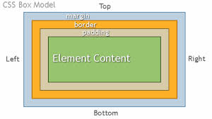

HTML is the structure of a webpage and CSS is sort of what brings it to life. CSS is the style and design of everything that you've put in the HTML file. The Document Object Model, or DOM for short, interprets the HTML.
If you think of a house, HTML is the skeleton of the house and the foundations, you then have css which is the style inside the house and all the designs. Finally, you have the DOM which is like the builders, who make it all come to life essentially.
This refers to the fact that all components of a website are inside boxes. Even if it appears to be a different shape it is actually engulfed in an invisible box. These boxes can be seen through chrome developer tools. The use of these boxes enables us as developers to identify each different aspect of the website and we can then analyse the page more effectively.
This is essentially as I said before, everything is surrounded by boxes! This just describes the boxes a bit better and gives them different sections; the margin, boarder and padding.
